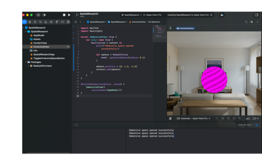
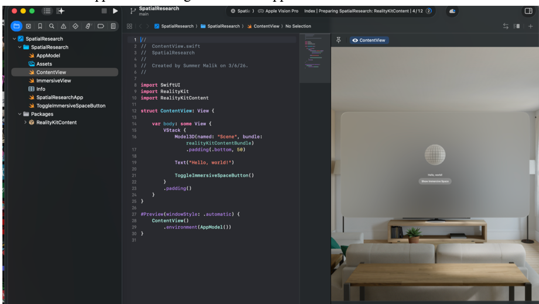

March 4, 2026 - March 8, 2026
This week I reframed the project around a more precise question: how does the representation of the same physical environment change an algorithm's decisions? I separated the work into spatial data acquisition and algorithm development, then defined an initial pipeline using point clouds, meshes, and graph-based abstractions.
I built the first working visionOS application in Xcode with Swift, SwiftUI, and RealityKit. I configured an immersive space and added a test sphere to verify that custom three-dimensional content could render correctly.
I then added an ARKitSession and a SceneReconstructionProvider availability check. The simulator could not provide live scene reconstruction, but the console confirmed that the immersive environment opened, the startup logic executed, and the support check worked. This prepared the application for later testing on Apple Vision Pro hardware.


To continue making progress without live reconstruction hardware, I also outlined the graph reasoning pipeline. Spatial input would be simplified into an algorithm-friendly representation before running breadth-first search, Dijkstra, and A*. This made the purpose of the project more than scanning a room: the main question became what computational tradeoffs are introduced by each abstraction.